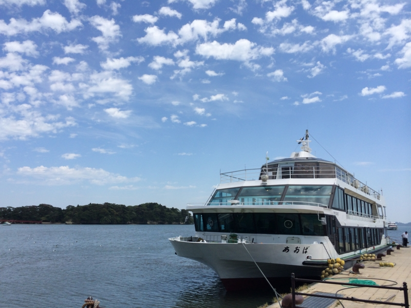

仙台と塩釜行ってきたった。
公開日：

プログラミング生放送勉強会 第28回＠東北大学 に参加してきたった。 #pronama - だるろぐ の次の日は、@jz5 と塩釜へ行った。
貸切だぜひゃっはーーー！ pic.twitter.com/8Z3qrEJNCr
— だるやなぎ に天使が舞い降りた！ (@daruyanagi) 2014年6月1日
仙台・白石・塩釜あたりは震災の一か月前に行って以来。
— だるやなぎ に天使が舞い降りた！ (@daruyanagi) 2014年6月1日
とりあえず港でマグロ・ウニ・イクラの三色丼とやらを食す。多分これで1500円ぐらいだったかな、忘れた。@jz5 は無職なのにわしより豪華なのを食べてた。

とりあえず船に乗って松島まで行く。風がめちゃくちゃ気持ちよくて、爆睡できた。

松島に到着。前回は行かなかった瑞巌寺というお寺を訪問。伊達家の菩提寺で国宝なのだそうだ。
震災のときはなかまで津波が押し寄せたらしい。見た感じ松島は震災前と変わんないけど、地元の方は苦労されたのだろうと思う。

なんやようわからんけど、仏像がたくさん建ってた。見覚えのあるお寺の札が建っていたのだけど、寄進でもしてもらったんだろうか。ちょろっと調べたら 西国三十三所 - Wikipedia というのと関連があるそうだけど、瑞巌寺だけでプチ西国三十三所巡りができまっせ、という趣向なのかしら。まぁ、いろいろ見られてお得感はあった。

拝観料が SUICA で決済できるのはほかも見習うべきだと思う。伝統と技術革新のさわやかなマリアージュやでぇ。
ここにはだるまくじというのがあるっぽくて（自分は気づかずに普通に100円のおみくじ引いてた）、くじを引いた後の（？）だるまが絵馬掛けの上にいっぱい並んでた。あと、「モテて、男子からけんか売られませんように」という絵馬がすごい気にいって写真に撮ってしまったのだけど、ここに乗せるのは遠慮しておく。

伊達政宗・忠宗父子の位牌。デカい。無駄にデカい。うちの爺ちゃんの位牌の100倍ぐらいはありそう。

ずんだソフトは一度食べたら十分だと思う。マズくはないが、毎日食べたい味ではない。
夕方は仙台に戻って、@bonprosoft おすすめのお店で牛タンを食べた。


シチューはおすすめのメニューのものとは少し違うらしいのだけど（あいにく切らしてたらしい）、それでも十分美味しかった。ごちそうさま。
I'm at 牛たん炭焼 利久 市役所前店 w/ @jz5 http://t.co/0Pw0GpNZ4M
— だるやなぎ に天使が舞い降りた！ (@daruyanagi) 2014年6月1日
@bonprosoft はできる子だと思った。